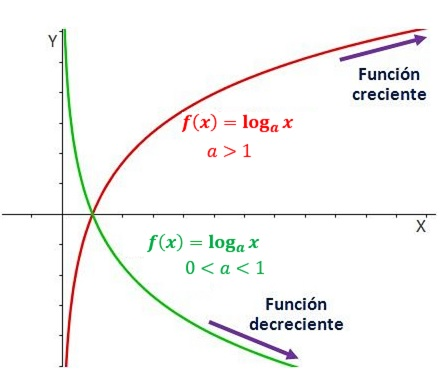

FUNCIÓN LOGARITMICA
Una función logarítmica está formada por un logaritmo de base a, y es de la forma:
f(x)= loga (x)
siendo a un real positivo, a > 0, y diferente de 1, a ≠ 1.
Cuando 0 < a < 1, entonces la función logarítmica es una función decreciente y cuando a > 1, entonces es una función creciente.
Características
Dominio: es el de todos los números reales que hacen que el argumento de la función sea mayor que cero. Veamos tres ejemplos de dominios de funciones logarítmicas:
Recorrido: El recorrido son todos los números reales.
Las funciones logarítmicas son continuas.
Si a es mayor que 1 (a > 1), la función es estrictamente creciente. En cambio, si a es menor que 1 (a < 1), la función es estrictamente decreciente.

OBSERVA EL SIGUIENTE VIDEO
INGRESA AL SIGUIENTE LINK
https://www.cerebriti.com/juegos-de-matematicas/funciones-logaritmicas-dinamica